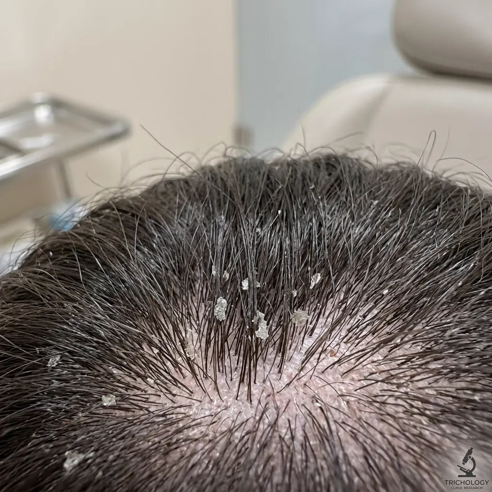
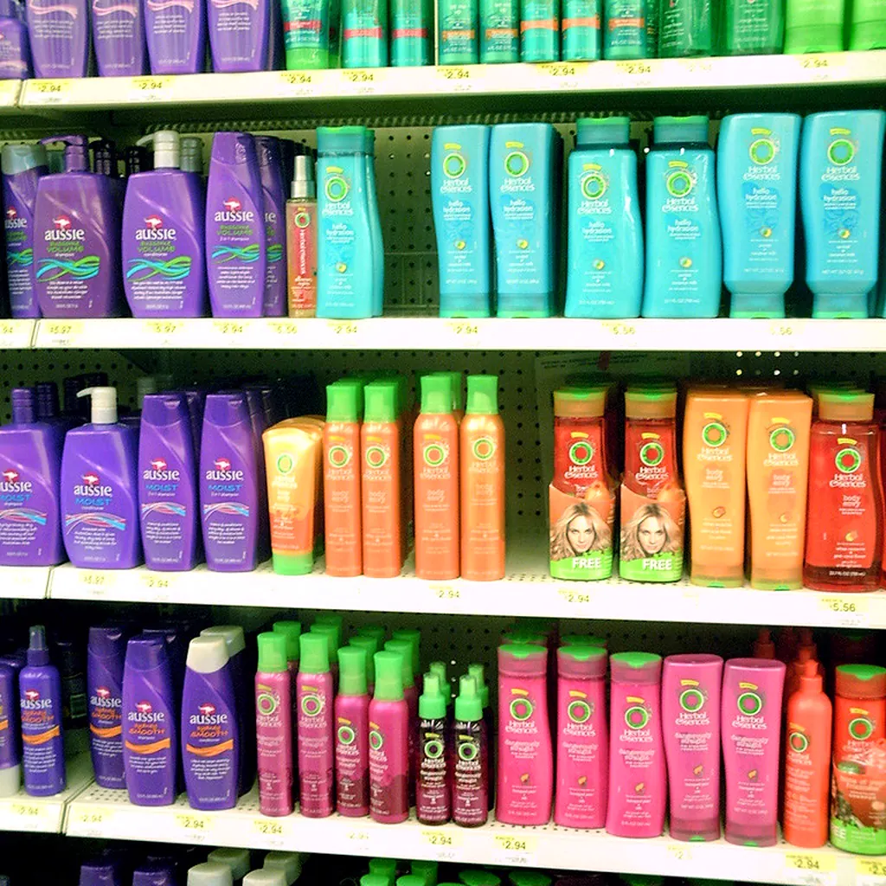
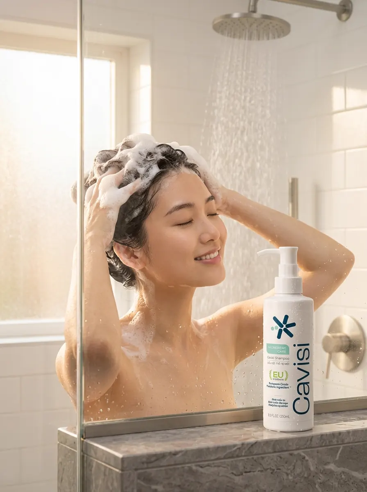
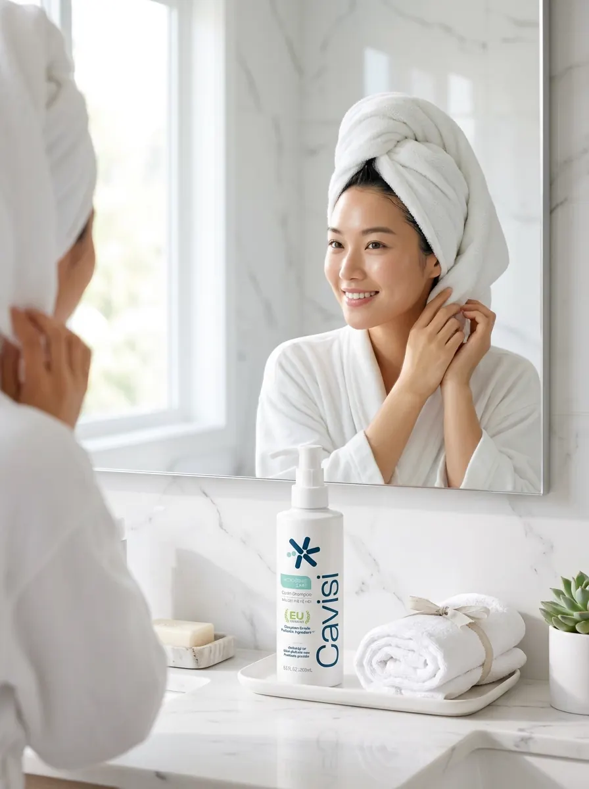
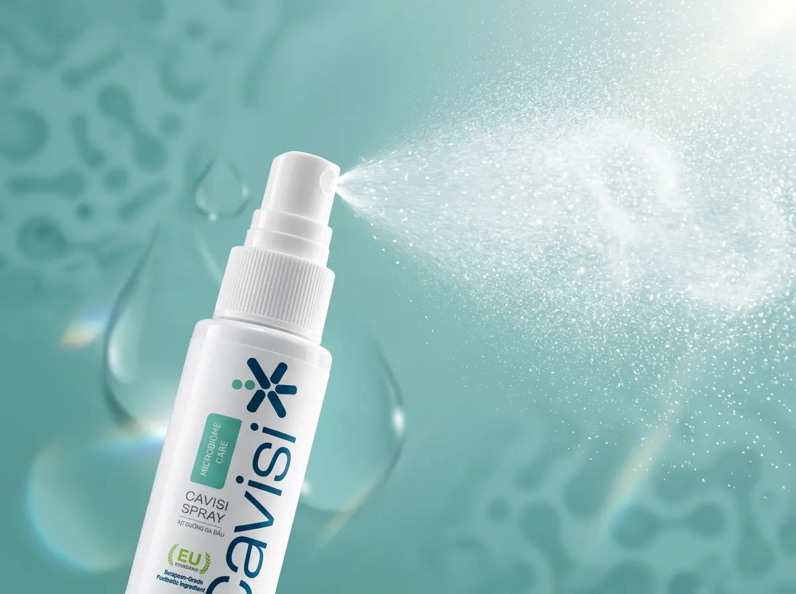

Bã nhờn & Bết dính
Bết xẹp sau khi đội mũ bảo hiểm
Mồ hôi và dầu nhờn tích tụ quanh chân tóc dưới mũ bảo hiểm có thể khiến tóc nhanh bết, nặng và kém thông thoáng.
Scalp microbiome care
Cavisi tiếp cận chăm sóc tóc từ nền tảng da đầu, với Shampoo và Spray đảm nhiệm hai vai trò khác nhau trong cùng một chu trình.
01 / Insight & Vấn đề thực tế
Khí hậu nhiệt đới nóng ẩm và thói quen đội mũ bảo hiểm thường xuyên tại Việt Nam có thể làm mồ hôi, bã nhờn và cặn bẩn tích tụ trên da đầu. Đây cũng là những yếu tố có thể đi cùng tình trạng mất cân bằng da đầu; vi nấm Malassezia là một trong các yếu tố liên quan đến gàu.
Mồ hôi và dầu nhờn tích tụ quanh chân tóc dưới mũ bảo hiểm có thể khiến tóc nhanh bết, nặng và kém thông thoáng.
 Ngứa ngáy & Bứt rứt
Ngứa ngáy & Bứt rứt
Cảm giác ngứa ngáy, bứt rứt có thể rõ hơn khi thời tiết oi bức hoặc căng thẳng; gãi mạnh dễ làm da đầu thêm khó chịu.

Gàu & Tế bào chếtLớp sừng tế bào chết bong tróc bám chặt quanh nang tóc, rơi rụng trên vai áo tối màu làm mất tự tin khi giao tiếp.

Đổi dầu gội liên tụcĐổi qua nhiều loại dầu gội nhưng tình trạng vẫn có thể quay lại, vì gàu và cảm giác khó chịu liên quan đến nhiều yếu tố trên da đầu, trong đó có vi nấm Malassezia.
Vi nấm Malassezia có liên quan đến tình trạng gàu. Dầu thừa, mồ hôi và cặn bẩn tích tụ có thể góp phần làm môi trường da đầu trở nên mất cân bằng.
02 / Góc nhìn Cavisi
Cavisi xây dựng định hướng Scalp-first: xem da đầu là nền tảng của trải nghiệm mái tóc khỏe và tổ chức sản phẩm theo từng vai trò rõ ràng.
Da đầu là điểm bắt đầu.
Hướng đến chăm sóc đúng mức.
Khoa học hiện đại kết hợp cảm hứng tự nhiên.
02B / Nhận diện nhu cầu
Da đầu dầu, vảy gàu hoặc cảm giác khó chịu có thể xuất hiện trong nhiều bối cảnh. Website cung cấp thông tin chăm sóc mỹ phẩm, không chẩn đoán hoặc thay thế tư vấn y tế.
Cavisi giải thích từng vai trò trong routine để người dùng có cơ sở so sánh, thay vì dựa vào lời hứa hiệu quả nhanh.
Nếu tình trạng kéo dài, trở nặng hoặc có dấu hiệu bất thường, nên trao đổi với chuyên gia y tế thay vì tự xem mỹ phẩm như phương pháp điều trị.
Hai bước được tổ chức ngắn gọn: Shampoo làm sạch nền; Spray dùng khi tóc gần khô, chăm sóc lưu lại và không cần xả.
03 / Khoa học & Cơ chế hoạt động
Cavisi tổ chức chu trình hai bước có vai trò riêng: Shampoo làm sạch nền da đầu, sau đó Spray lưu lại để chăm sóc tiếp nối và không cần xả lại.
Rinse-off Cleanser · Chuẩn bị nền da đầu sạch thoáng
Xịt dưỡng da đầu leave-on · Không cần xả lại
04 / Sản phẩm & Bộ đôi

POSTBIOTIC SCALP SHAMPOO
Dầu gội giúp làm sạch tóc, da đầu, vảy gàu và dầu thừa tích tụ; chuẩn bị nền da đầu cho bước chăm sóc tiếp theo.
Xem chi tiết Shampoo
POSTBIOTIC SCALP SPRAY
Xịt dưỡng da đầu có thành phần lên men vỏ liễu và Zinc PCA, đảm nhiệm bước chăm sóc tiếp nối trong chu trình Cavisi.
Xem chi tiết Spray
CHU TRÌNH CHĂM SÓC 2 BƯỚC
Chu trình kết hợp Shampoo làm sạch nền và Spray chăm sóc tiếp nối, với vai trò của từng sản phẩm được trình bày riêng.
Khám phá trọn bộ ComboChiến dịch phong cách sống
Bộ sưu tập hình ảnh chiến dịch minh họa chu trình Cavisi trong không gian phòng tắm, sau vận động và nhịp sống đô thị.

Làm sạch êm dịu bã nhờn và vảy gàu trong làn nước ấm nắng sớm.
Xem Cavisi Shampoo
Trải nghiệm mái tóc nhẹ và da đầu thông thoáng sau bước làm sạch.
Xem Cavisi Shampoo
Vòi xịt nano giúp phân bổ dung dịch trực tiếp và đều trên vùng da đầu cần chăm sóc.
Xem Cavisi Spray
Dạng phun sương giúp phân bổ dung dịch trên da đầu và hỗ trợ hạn chế cảm giác nặng tóc.
Xem Cavisi SprayHình ảnh minh họa cảm giác đường rẽ ngôi sạch thoáng sau bước làm sạch da đầu.
Xem Cavisi ShampooHỗ trợ làm sạch mồ hôi, dầu thừa và cặn bẩn tích tụ sau vận động hoặc đội mũ bảo hiểm.
Xem Cavisi ShampooTrải nghiệm mái tóc nhẹ, tơi và thông thoáng trong nhịp sống hàng ngày.
Xem Cavisi Shampoo
Kết hợp bước làm sạch nền với bước chăm sóc tiếp nối, giúp vai trò của từng sản phẩm dễ hiểu và dễ ghi nhớ.
Khám phá bộ đôi05 / Thông tin sản phẩm
Từ thành phần, cách sử dụng đến tình trạng hồ sơ, mỗi nhóm thông tin được trình bày theo đúng phạm vi nguồn hiện có.
Thành phần
Danh sách thành phần từ tài liệu sản phẩm hiện có, không dùng riêng từng thành phần để suy ra hiệu quả của thành phẩm.
Cách sử dụng
Các bước cơ bản được giữ sát nội dung nguồn; chi tiết chưa xác nhận sẽ không được tự bổ sung.
Thông tin công bố
Đã đối chiếu với hai phiếu công bố trong bộ nguồn nội bộ
06 / Cách sử dụng cơ bản
Đọc kỹ hướng dẫn trên bao bì trước khi sử dụng. Không dùng nếu mẫn cảm với bất kỳ thành phần nào của sản phẩm.
07 / Minh bạch
Cavisi không dùng một biểu tượng chung để thay thế cho tình trạng thực tế của từng loại tài liệu.
Tìm hiểu cam kết thương hiệuThành phần
Công bố sản phẩm
Kiểm nghiệm thành phẩm
08 / Giao tiếp có trách nhiệm
Mỗi sản phẩm đảm nhiệm một phần cụ thể trong routine.
Thông tin sản phẩm và tài liệu được phân loại theo nguồn.
Không dùng hình minh họa hoặc ngôn ngữ khiến người đọc hiểu thành kết quả đã được chứng minh.
09 / Câu hỏi thường gặp
Cavisi Shampoo (250ml) có giá niêm yết 249.000đ, Cavisi Spray (30ml) có giá niêm yết 149.000đ và Combo Bộ Đôi Cavisi có giá niêm yết 359.000đ.
Không. Shampoo tập trung vào việc làm sạch tóc và da đầu. Spray là xịt dưỡng dùng trực tiếp trên tóc và da đầu, được hướng dẫn dùng khi tóc gần khô.
Làm ướt tóc và da đầu, lấy lượng phù hợp, thoa chủ yếu lên da đầu, massage nhẹ bằng đầu ngón tay rồi xả kỹ với nước. Dùng theo tần suất ghi trên nhãn hoặc hướng dẫn chính thức của Cavisi.
Lắc đều chai, dùng khi tóc gần khô, đặt sản phẩm cách tóc khoảng 10-15 cm rồi xịt trực tiếp và phân bổ đều trên da đầu. Massage nhẹ và không xả lại sau khi dùng.
Danh sách INCI đầy đủ và chi tiết công thức của từng sản phẩm được trình bày chi tiết tại trang thông tin của Cavisi Shampoo và Cavisi Spray.
Cavisi Shampoo: 28338/26/CBMP-HN. Cavisi Spray: 28222/26/CBMP-HN. Hai số đã được đối chiếu với phiếu công bố trong bộ nguồn nội bộ.
Ngưng sử dụng. Nếu dấu hiệu kéo dài, nghiêm trọng hoặc gây khó chịu, hãy tham khảo bác sĩ da liễu. Nội dung website không thay thế tư vấn y khoa.